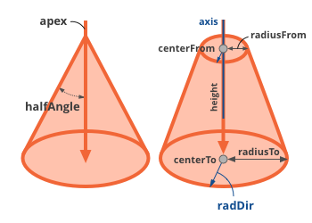

Cone¶
Represents an orthogonal conical feature. It can be a full cone that originates from a point or a truncated cone (conical frustum). When providing a parameter value for the creation of a cone note that in each step a consistent cone is created based on the new value and the current values of certain other parameters. In the same time the values of the remaining, dependent parameters are updated. (These will be noted below.)
Diagram
-
class
Cone¶ Bases:
geomagic.api.v3.swig.SurfaceFeatureEvents
Name
Description
deleted
Triggered immediately before a DataObject is deleted.
updated
Published immediately after a DataObject’s data has been updated.
property_modified
Triggered when a property is changed. Args contains an attribute called “property” which is the property that changed.
Attributes
Name
Read only
Type
Range
Default Value
Description
angleFrom
No
double-INF - +INF
0.000000
Minimum value of angle range.
angleTo
No
double-INF - +INF
6.283185
Maximum value of angle range.
apex
Yes
[0.00 0.00 0.00]
Point specifying the vertex of the cone. Note that in the special case when radiusTo equals to radiusFrom, the cone degenerates to a cylinder and the apex cannot be represented by a single position in real space; in which case it will contain not-a-number double values.
axis
Yes
[0.00 0.00 0.00]
3D Vector representing the rotational axis of the cone. Must be a normalized vector. Note that the axis points away from the apex, towards growing radii.
boundingBox
Yes
[-0.500000 -0.500000 0.000000] [0.500000 0.500000 1.000000]
The 3D dimensional bounds of the surface.
centerFrom
No
[0.00 0.00 0.00]
3D Vector representing the middle of the smaller face of the cone. If the user changes this value then apex, axis, halfangle, height, and radialDir will be reevaluated.
centerTo
No
[0.00 0.00 0.00]
3D Vector representing the middle of the larger face of the cone. If the user changes this value then apex, axis, halfangle, height, and radialDir will be reevaluated.
halfAngle
Yes
double0.463648
Half the angle that is formed from the apex projecting downward, in radians.
height
Yes
double1.000000
Distance between the centers of the two bases of the feature.
radialDir
Yes
[0.00 0.00 0.00]
3D Vector perpendicular to the axis of the Cone. With this vector and the axis the coordinate system for the cone can be computed.
radiusFrom
No
double-INF - +INF
0.000000
Radius of cone at the location of centerFrom. If the user changes this value then apex, halfangle, and height will be reevaluated.
radiusTo
No
double-INF - +INF
0.500000
Radius of cone at the location of centerTo. If the user changes this value then apex, halfangle, and height will be reevaluated.
solidity
No
enumeration0 - 2
NonSize
Solidity of the feature. Can be Hollow, Solid, or NonSize.
Methods
-
__eq__(self, other)¶
-
__init__(self) → Cone¶
-
__ne__(self, other)¶
-
property
angleFrom¶
-
property
angleTo¶
-
property
apex¶
-
property
axis¶
-
property
boundingBox¶
-
property
centerFrom¶
-
property
centerTo¶
-
property
halfAngle¶
-
property
height¶
-
initialize(Cone self, Vector3D apex, Vector3D axis, double halfAngle)¶ initialize(Cone self, Vector3D apex, Vector3D axis, double halfAngle, double heightFrom, double heightTo)
initialize(Cone self, Vector3D apex, Vector3D axis, double halfAngle, double heightFrom, double heightTo, Vector3D radialDir)
initialize(Cone self, Vector3D centerFrom, Vector3D centerTo, double radiusFrom, double radiusTo)
initialize(Cone self, Vector3D centerFrom, Vector3D centerTo, double radiusFrom, double radiusTo, Vector3D radialDir)
-
property
radialDir¶
-
property
radiusFrom¶
-
property
radiusTo¶
-
property
solidity¶
-
Examples
Creates a cone with a flat bottom.
from geomagic.api.v3 import *
import math
# Create Cone
cone = Cone()
halfAngle = math.pi / 4.0
axis = Vector3D(0.0, 0.0, 1.0)
xAxis = Vector3D(0.0, 1.0, 0.0)
xAxis.normalTo(axis).normalize() # Orthogonal to axis
apex = Vector3D(0.0, 0.0, 0.0)
heightFrom = 0.0
heightTo = 0.05
# Make a cone whose apex is at the origin and whose axis points along the z-axis
# that is 5 centimeters high with a halfAngle of 45 degrees.
cone.initialize(apex, axis, halfAngle, heightFrom, heightTo, xAxis)